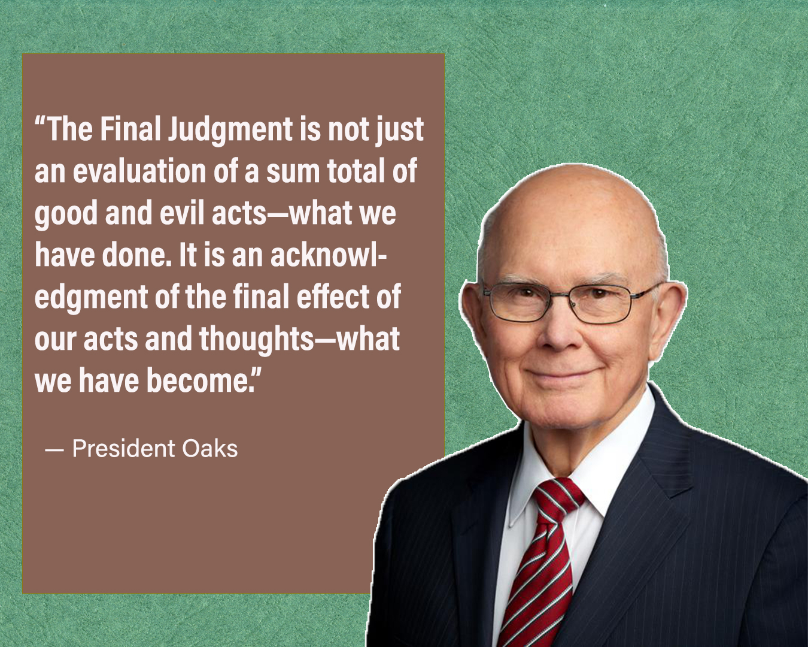
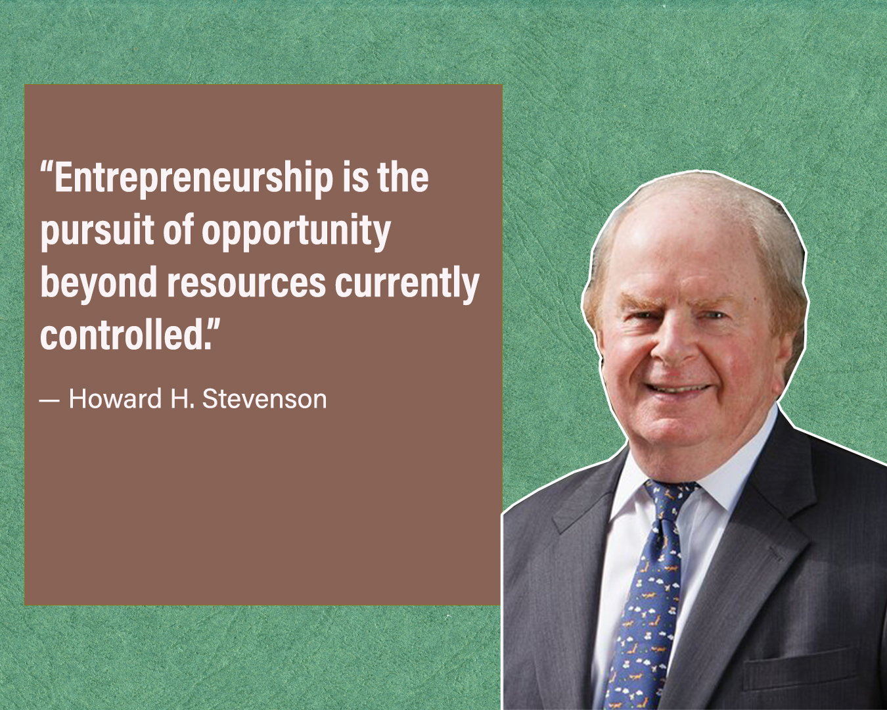
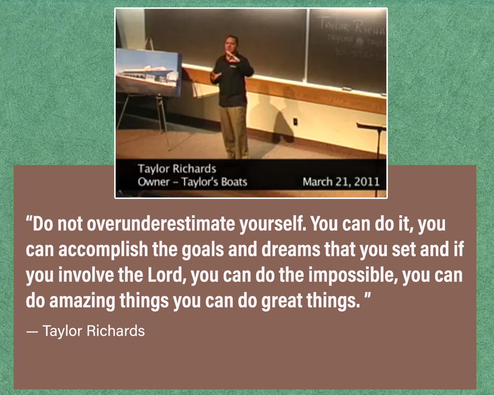
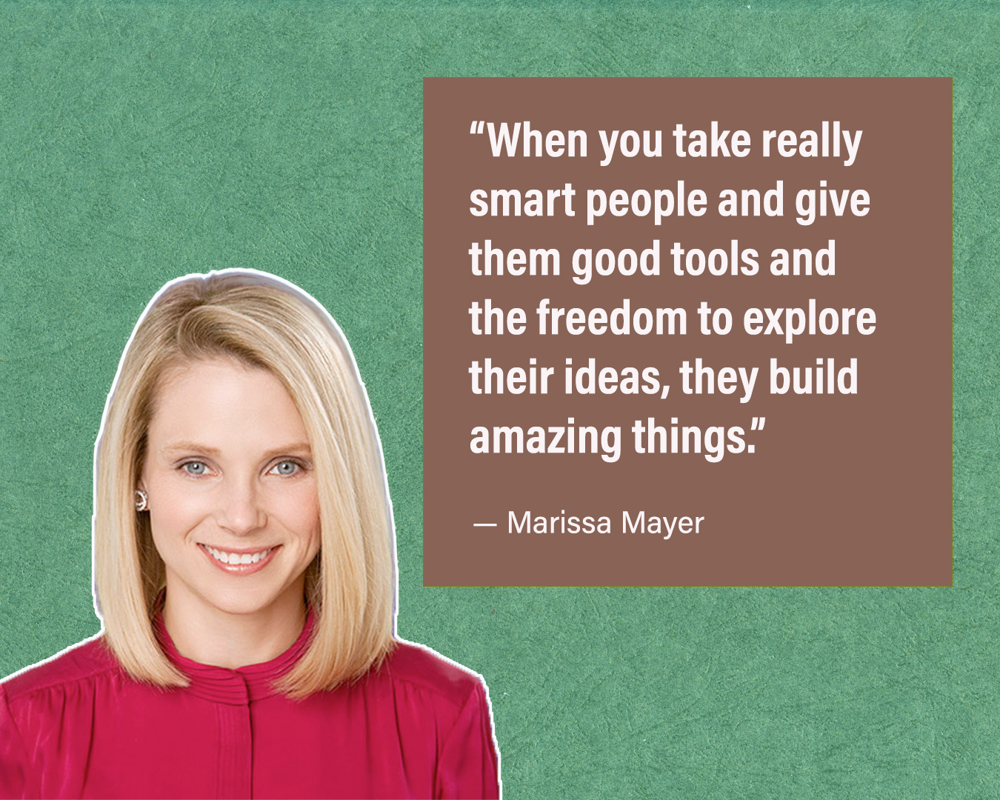
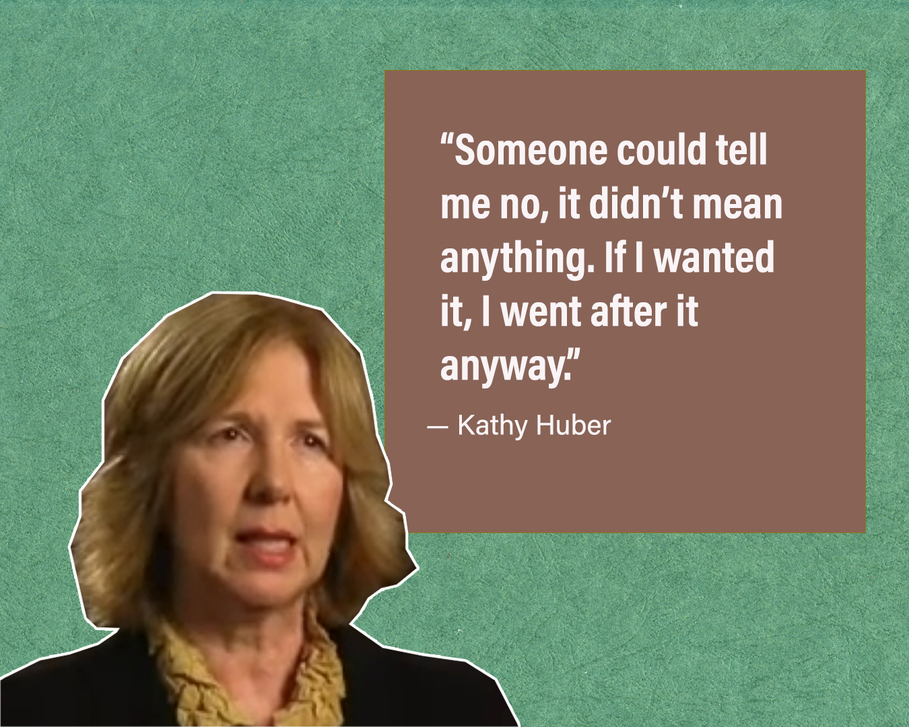
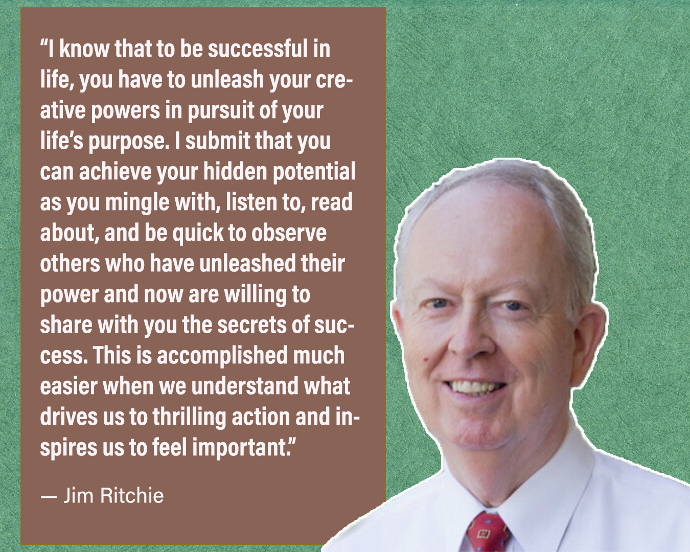

Week 10- Journal Entry
The Challenge to Become

This message is so inspiring. President Oaks reminds us that the gospel is not just about knowing or testifying of Christ. It is about becoming like Him. True conversion changes our heart, mind, and actions, shaping us into the people God wants us to be. Eternal life is the reward of who we become, not just what we do or know. Trials, family experiences, and daily choices are all opportunities to grow, develop charity, and align our desires with God’s will. This teaching challenges me to focus on my personal growth, my relationships, and my effort to live each day in a way that reflects Christ, knowing that even small, consistent steps lead to lasting change. Ultimately, the Final Judgment will not be based merely on a sum of our good and bad acts, but on the final effect of our actions and thoughts, what we have become.
The Heart of Entrepreneurship

This reading helped me understand that entrepreneurship is not just about starting a business, but about the way a person thinks and approaches opportunities. Howard H. Stevenson and David E. Gumpert teach that the heart of entrepreneurship is pursuing opportunities even when the necessary resources are not yet available. Instead of focusing first on what resources they control, entrepreneurs focus on recognizing opportunities and then finding creative ways to gather the resources they need. They also tend to move quickly, accept reasonable risk, and remain flexible as they develop their ideas. I also learned that many opportunities appear because of changes in technology, society, or consumer behavior, and successful entrepreneurs pay close attention to these changes. This message reminds me that entrepreneurship is more about vision, initiative, and creativity than about having money or perfect conditions, and that acting on opportunities with determination and flexibility can lead to meaningful innovation and growth.
Think Big

Think Big is an inspiring video where Taylor Richards shares his experience as a boat dealer who was invited to participate in a ranking of the top dealerships in North America. At first, he simply hoped his company would make the Top 100. As the rankings were announced at a convention, he was surprised to learn that his team had reached number 11, and the following year they improved even more and reached number 6. Through this experience, Richards teaches an important lesson about believing in our potential. He encourages us not to underestimate ourselves, to pursue our goals and dreams with confidence, and to involve the Lord in our efforts. With faith, determination, and hard work, we can accomplish great things and go far beyond what we originally imagined.
License to Pursue Dreams

License to Pursue Dreams is a message from Marissa Mayer explaining how giving people freedom to explore their ideas can lead to creativity and innovation. She describes the concept of “20 percent time” at Google, where employees are encouraged to spend part of their time working on projects they are passionate about. Even though employees do not always follow the rule exactly, many important products and features have come from this time of exploration. Mayer explains that when talented people are trusted and given the tools and freedom to create, they often produce amazing results. The main teaching of the message is that giving people the license to pursue their ideas encourages passion, creativity, and innovation, which can lead to meaningful and successful outcomes.
Acton Hero Kathy Huber

I loved watching Kathy Huber’s story. She was one of the few women in engineering at MIT, and she went on to build important parts of the early internet while following her passion for creating. She was persistent, never letting “no” stop her, and learned to think outside the box from early challenges. She teaches that setbacks and barriers, including gender inequality, can be turned into opportunities for growth, learning, and mentoring others. Her story inspires me to pursue my goals with courage, creativity, and perseverance.
Your Emotional Fingerprint

Watching the lesson on “Your Emotional Fingerprint” reminded me how important it is to understand what truly drives me. I realize that my feelings, reactions, and choices are not random. They come from a deeper set of motivations that shape my life, relationships, and goals. The Cherokee parable about the two wolves struck me deeply. The traits I nurture within myself, whether joy, kindness, and hope or fear, anger, and pride, will grow stronger. By becoming aware of my emotional fingerprint, I can take control of my responses, focus on positive actions, and pursue my goals with purpose and confidence. This lesson inspires me to reflect on what I am feeding daily, to understand myself better, and to be more mindful of the influence I have on those around me.
Discussion Board Post Reflection
Reflecting on the Week 10 study material has reminded me that achieving big dreams requires growth, creativity, perseverance, and self-awareness. From The Challenge to Become, I learned that true conversion is about becoming, not just knowing. Trials, family experiences, and daily choices help shape who I am and who I can become. The Heart of Entrepreneurship taught me that pursuing opportunities matters more than having perfect resources. Acting quickly, staying flexible, and being creative can turn ideas into meaningful outcomes. Think Big showed me the power of believing in my potential and working hard with faith, determination, and confidence, because we can achieve far more than we imagine.
License to Pursue Dreams inspired me to explore ideas freely and creatively, knowing that passion and freedom often lead to innovation and success. I especially loved Kathy Huber’s story. She was one of the few women in engineering at MIT and went on to build important parts of the early internet while following her passion. The many times she heard no did not hold her back. She continued to pursue her goals, think creatively, and learn from challenges. Your Emotional Fingerprint reminded me that understanding what drives me allows me to act with purpose, take control of my choices, and focus on positive actions.
Altogether, these lessons show me that achieving my big dreams will require courage, creativity, perseverance, faith, self-awareness, and the willingness to embrace challenges as opportunities for growth.